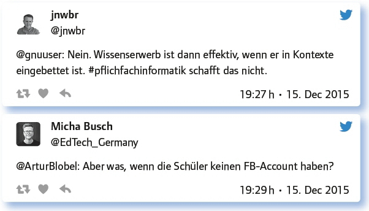
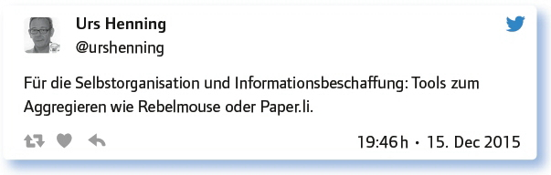

von Urs Henning
Der Fokus liegt bei diesem #EDchatDE auf den Werkzeugen, die Voraussetzung sind für das digitale Lehren und Lernen und die damit den Aufbau von Medienkompetenz unterstützen. Wir tragen unsere besten Tools zusammen und tauschen uns über Unterrichtserfahrungen, Einsatzszenarien und Ideen aus und denken darüber nach, wie digitale Medien den Unterricht bereichern oder behindern können. Wir diskutieren Tools und Anwendungen für die Vorbereitung, für die Organisation und für den Unterricht selbst.
Was für grundsätzliche Anforderungen muss ein gutes Tool für den Unterricht erfüllen?
Als Grundlage für die Diskussion wurden dazu einige Punkte zusammengetragen:
Gute Tools müssen kostenfrei auf allen Endgeräten nutzbar sein, im besten Fall ohne Anmeldung und opensource konstruiert.
Es sollte in verschiedenen Klassenstufen, Fächern und bei unterschiedlichen Themen einsetzbar sein.
Die Erstellung von eigenen individuellen Lerninhalten sollte durch Lehrer und Schüler möglich sein.
Die App muss meine Kids kognitiv fordern.
Ideal ist ein Tool, wenn es sofort einsetzbar ist und wenn Mitarbeiter keine Accounts benötigen.
An app for students should be intuitive, fun and a productive tool that enhances creativity.
Mir ist Werbefreiheit ganz wichtig. Am liebsten gänzliche Freiheit von wirtschaftlichen Interessen beim Hersteller.
Es sollte eine größere Verbreitung haben (Community) und einen nachhaltigen Service (Updates) bereitstellen.
Apps, die man für die Schule nutzt, müssen Datenschutzrichtlinien entsprechen, wenn man personalisierte Daten eingibt.
Was sind eure Lieblingstools? Weshalb? Wozu nutzt ihr sie? Gerne mit kurzer Beschreibung und Links zu Tutorials.
Folgendes wurde zu dieser Frage zusammengetragen:
Explain-Everything-Erklärfilme statt interaktivem Whiteboard, statt Powerpoint … Ausprobieren!
BookCreator: Genial einfaches Tool, um digitale Bücher oder Comics zu erstellen. Auch zusammen mit EE: https://t.co/2jDbCENMe1
Making first experiences with GitHub: https://t.co/XDh6x8Xdr3, „Create. Replicate. Fork. Give back“. – That’s education!
Evernote – muss man lieben. Es hat mich papierfrei gemacht. Alles Papier wird gescannt, getagged und entsorgt.
Wordclouds mit Answergarden: Feedback Tool. Online Brainstorming. Klassenbeteiligung: https://t.co/se22fg1Yyb
Geogebra: kostenloses Demonstrationswerkzeug für Mathe (Geometrie, Analysis) & amp; Physik (Geometr. Optik); enaktive Ebene
Fast alle unsere Schüler arbeiten unaufgefordert und ohne Hinweise von Lehrern mit Quizlet: https://t.co/dl05pUbX8X
Teachertool für meine komplette Notenorganisation, Klassen-/Kursbuch.
@GoodNotesApp und #Notability, @gingerlabs for notes written by hand but also as „whiteboard“.
PowToon als Storytelling Tool – motivierend und in allen Fächern einsetzbar.
For Data Storage I use Dropbox, My Cloud, uCloud and GoogleDrive.
Habt ihr Einsatzszenarien, Methoden oder konkrete Beispiele für den Einsatz guter Tools im Unterricht?
Beispielsweise iP-Webcam (android), portable Dokumentenkamera. per Browser zugreifen. Nur echt mit #PflichtfachInformatik.
Gamifizierte Verständnisüberprüfung funktioniert mit Kahoot: https://t.co/EwKKc8a0Ew
Aufsatzanalyse mit linguistischen online Tools mithilfe von Webquest: https://t.co/ocZiqbwFfD
I use Etherpad for cyberstorming, coggle for clustering and Wordle for visualisation.
Einsatzmöglichkeiten von Tablets aus dem Projekt: https://t.co/mUKVFQ4gCPvonjufi_edu https://t.co/hB9ZoX929l
QR-Code-Rallye im Schulgebäude verbunden mit dem Spiel Jeopardy.
StopMotion eignet sich zur Visualisierung historischer Ereignisse: https://t.co/TNLJG5J5dX
Kleine Geschichten können mit Puppet Pals 2 erzählt werden: https://t.co/SDchKwgyBD
Nachrichtensendung erstellen mit TouchCast: https://t.co/JQt3wLzm5Z
Wie geht ihr mit Datenschutz und dem Anlegen unterschiedlicher Accounts um? Gibt es an euren Bildungsinstitutionen Empfehlungen?
Hier wurden einige Tipps genannt:
Halbsprechende Benutzernamen: Eintrittsjahr und zwei Buchstaben des Namens und Vornamens. Eingeweihte wissen, wer wer ist.
Enge Abstimmung mit Datenschutzbeauftragten. Eltern informieren, mit Pseudonymisierung arbeiten, zentrale Accounts sind total hilfreich.
Registrierung der schuleigenen iPads und nicht der Schüler.
BUT: I prefer tools that do not require a login.
Nur #PflichtfachInformatik und Verschlüsselung bieten echte Datensicherheit: Pflicht auch für Lehrer zum Schutz der Schülerdaten.
Ich lege einen Redakteurs-Zugang bei Wordpress an, den dann alle Schüler nutzen können. Siehe z. B. hier: https://t.co/1rpEQPdwPF
Für Lehrerworkshops lege ich Accounts an, die dann Teilnehmer nutzen können (und behalten, wenn sie wollen).
Antworte auf 3 Tweets unterschiedlicher Teilgeberinnen a) zustimmend, b) kritisch, c) provozierend!

Schlechte Erfahrungen? Bei welchen Tools ist Vorsicht geboten? Wo muss gewarnt werden? Inwiefern?
Hier wurde vor allem auf Altersgrenzen bzw. die Begrenztheit von Social Media für die Verwendung in der Schule hingewiesen.
Besser nicht zu komplexe Tools, die eine Doppellektion Schulung benötigen.
Wenn du im Internet auf Wiki/Blog arbeitest – speichere regelmäßig!
I mean, age restrictions e. g. WhatsApp (16 ys!) and CC licences (Tagxedo: CC BY-BC- SA).
Unverschlüsselte Dienste, die Schülerdaten sammeln o. autom. synchronisieren: Unterricht darf Mobbing n. provoz, daher #PflichtfachInformatik.
Glaube nicht, du könntest Social Media einfach so für Bildungszwecke nutzen. AGB, Datensicherheit, Altersgrenzen.
Welche Anregungen, Fragen hast du sonst noch zum Thema?

Fazit:
Ein gutes Tool für den Unterricht erfüllt eine ganze Reihe unterschiedlichster Anforderungen. Es ist einfach, intuitiv, browserbasiert und damit auf allen Endgeräten nutzbar. Es ist universell und kann fächerübergreifend und für alle Klassenstufen eingesetzt werden. Das ideale Tool ist Open Source und frei von wirtschaftlichen Interessen. Es erfüllt die Anforderungen des Datenschutzes, wird weiterentwickelt und verfügt über eine Community.
Von der Fülle der genannten Lieblingstools seien hier nur einige herausgegriffen. Mit Book- Creator können einfach interaktive Bücher und Comics erstellt werden. WordPress Blogs sind einsetzbar für Protokolle, Unterrichtsblöcke oder Portfolios. Teachertool übernimmt die Notenorganisation und ist gleichzeitig Klassen- bzw. Kursbuch. Mit der Notiz-App Ever- note wird alles Papier gescannt, getagged und entsorgt. Wordcloud-Programme wie Answergarden lassen sich für Feedbacks und Brainstorming nutzen. Als Tafelersatz bewährt haben sich Explain Everything und BaiBoard. Kahoot ermöglicht gamifizierte Verständnisüberprüfung. Aufsatzanalyse ist möglich mit online Textanalysetools. QR-Code-Ralleys im Schulgebäude lassen sich verbinden mit dem Spiel Jeopardy. Mit StopMotion kann man historische Ereignisse visualisieren. Nachrichtensendungen lassen sich selber gestalten mit Tellagami, Kinotrailer mit iMovie oder Videos mit Adobe Voice. Nützliche Hilfsprogramme sind schließlich URL-Shortener, Mindmapping-Tools und Etherpads.
Weitere Chats zum Thema:
„Die besten Web2.0 Tools für den Unterricht“. #EDchatDE Nr. 36 vom 17. 6. 14: https://wiki.andrespang.de/index.php?title=EDchatDE_Archiv_2014#Tweetprotokolle_zum_17.6.14_-_36._.23EDchatDE_.22Die_besten_Web2.0_Tools_f.C3.BCr_den_Unterricht.22
Weitere Infos zu diesem Thema finden sich z. B. hier:
Education Group: Toolbox – Werkzeugkiste: Nützliche Tools, die Lehrkräfte sowohl bei der Organisation als auch bei der Vorbereitung und Gestaltung des Unterrichts unterstützen. https://www.edugroup.at/praxis/tools-software.html
Hart, Jane: Top 100 Tools for Learning 2015. Jane Harts Liste mit den 100 besten Learning Tools, spiegelt aktuelle Trends in Lehren und Lernen. http://c4lpt.co.uk/directory/top-100-tools/
Kauffmann, Rémy: 99 Ideen zur Nutzung des Computers im Unterricht: Eine Webseite mit praxiserprobten Internetangeboten, eine Fundgrube für Lehrkräfte von Laptop- und Tablet-Klassen. www.unterrichtsideen.ch/index.php?title=Hauptseite
Medienfundgrube: Eine Sammlung von Tools sortiert nach Unterrichtsfächern. www.medienfundgrube.at/
Link zum vollständigen Protokoll: